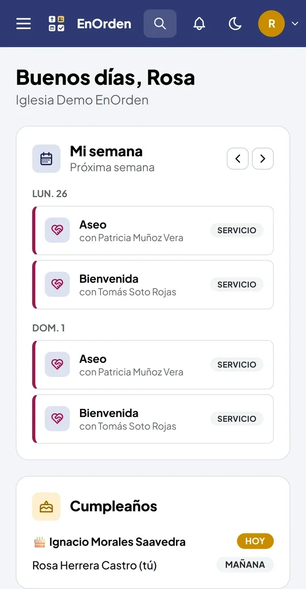

EnOrden
Una sola plataforma para administrar una iglesia: miembros, finanzas, alabanza, agenda, escuela dominical y más. Funciona en Android y en el navegador, con los datos de cada iglesia separados y los permisos aplicados en la base de datos.

De cuadernos y planillas a una app
Muchas iglesias llevan finanzas, repertorios y turnos en cuadernos, planillas y grupos de WhatsApp. EnOrden nació de dos apps que hice para mi propia iglesia (finanzas y repertorios) y creció hasta ser una plataforma para varias iglesias, donde cada una activa solo los módulos que usa.
Personas
Miembros, asistencia, consolidación de visitas nuevas y peticiones de oración.
Cultos y actividades
Agenda, alabanza con tonos y modo en vivo, ministerios, escuela dominical y turnos de servicio.
Administración
Finanzas por fondo con reportes, beneficios, secretaría con actas y certificados, inventario y proveedores.
"Mi semana"
Cada hermano ve en un solo lugar sus turnos, cultos y clases, con recordatorios en el teléfono.
Pensado para WhatsApp
Invitación con código QR, boletines, recordatorios y saludos de cumpleaños listos para enviar.
Sin trabas para empezar
Entrada con Google o código por correo, asistente de configuración en 4 pasos e importación desde Excel.
Una base, dos clientes
La app móvil y la versión web comparten la misma base de datos y las mismas reglas de permisos: lo que se hace en el computador aparece en el teléfono y al revés.
- Capa de servicios aislada: en la web, solo la carpeta
servicios/habla con el back. Si mañana Supabase se reemplaza por una API propia, se reescribe esa carpeta y el resto queda igual. - Multi-iglesia: cada tabla lleva su iglesia y una persona puede pertenecer a varias con la misma cuenta, cambiando entre ellas desde el inicio.
- Migraciones reproducibles: 39 archivos SQL que se pueden volver a ejecutar sin problema, cada uno con su prueba automática sobre PGlite (PostgreSQL en memoria).
- Pruebas de punta a punta: Playwright para el ingreso y para verificar que la web se pueda instalar como app.
- Actualizaciones sin pasar por la tienda:
expo-updatespara corregir la app al instante. - Exportar todo: Excel con SheetJS (que se puede volver a importar) y PDF para reportes, actas y certificados.
Los permisos viven en la base, no en la pantalla
Roles por módulo
Cada persona tiene accesos por módulo (tesorero, secretario, editor, lector…) y perfiles listos como pastor, músico o maestro. Todo se valida con seguridad por filas en PostgreSQL.
Historial de cambios
Triggers que registran quién agregó, cambió o eliminó qué y cuándo, con los valores antes y después. Los movimientos financieros anulados quedan con su motivo.
"Ver como"
El administrador puede revisar la app con los menús y botones de otra persona o rol antes de darle acceso.
Datos sensibles
Teléfonos y direcciones solo los ve quien atiende el directorio. Cada iglesia puede descargar todos sus datos o pedir su eliminación.
No solo código
También armé el modelo de negocio y el lanzamiento.
- Planes en pesos chilenos: uno gratis de hasta 40 personas, planes por tamaño de iglesia y uno para redes. Sin cobro por usuario y con 30 días de prueba.
- Precio fundador para las primeras 20 iglesias.
- Sitio informativo con páginas legales (privacidad, términos y eliminación de cuenta) para Google Play.
- Piezas para redes sociales generadas desde una plantilla HTML con Playwright, calendario de publicaciones y una planilla de seguimiento de iglesias contactadas.